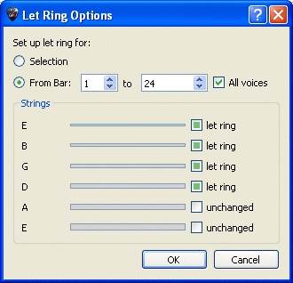

Damit Sie beim Erzeugen Ihrer Partitur schneller vorankommen, sind in Guitar Pro eine Menge an Hilfsmitteln und Assistenten integriert worden. Diese stehenüber das Menü Hilfsmittel zur Verfügung.
Assistenten für die Notenbearbeitung
Dieser Assistent erlaubt Ihnen Änderungen für 'Gehaltene' Noten auf eine Auswahl an Takte oder Noten auszuweiten.
Dieser Assistent erlaubt Ihnen Änderungen für handballengedämpfte Noten auf eine eine Auswahl an Takte oder Noten auszuweiten.
Mit den Assistenten kõnnen Sie eine Menge an Zeit sparen. Zum Beispiel kõnnen Sie für ein Arppegio mit nur einer Anweisung für die drei obersten Saiten alle Noten in Let Ring umwandeln:

Hilfsmittel für die Partiturverwaltung
Diese Assistenten kõnnen hilfreich sein, wenn Sie komponieren oder importieren oder bei einer Eingabe in Standard-Notation, um das bestmõgliche Arrangement der Tabulatur zu erhalten
Positioniert die Taktstriche neu und reorganisiert die Noten, so dass die Notenwerte musikalisch korrekt der Taktangabe entsprechen, ohne die eigentliche Zeitdauer des jeweiligen Notenwertes zu verändern.
Fügt Takte in, deren Längen nicht der Taktangabe entsprechen, oder in leere Takten Pausen ein, damit diese vollständig werden und lõscht oder verkleinert gegebenenfalls Pausenwerte, wenn die Taktlängen hierdurch zu lang werden.
Verändert die Griffposition der Note auf dem Griffbrett bzw. Tabulatur, ohne dabei die Melodie zu ändern, damit Griffe leichter zu greifen sind und Noten hintereinander besser spielbar sind.
Kann Stimmen auf eine Multistimme Partitur reorganisieren.
Andere Assistenten
Transponiert die Noten der aktuellen Spur, oder aller Spuren, um eine von Ihnen eingegebene Anzahl an Halbtonschritten nach oben oder nach unten. Akkord-Diagrame werden dabei nicht verändert.
überprüft auf der ganzen Partitur, ob die Taktlänge der Taktangabe entspricht.